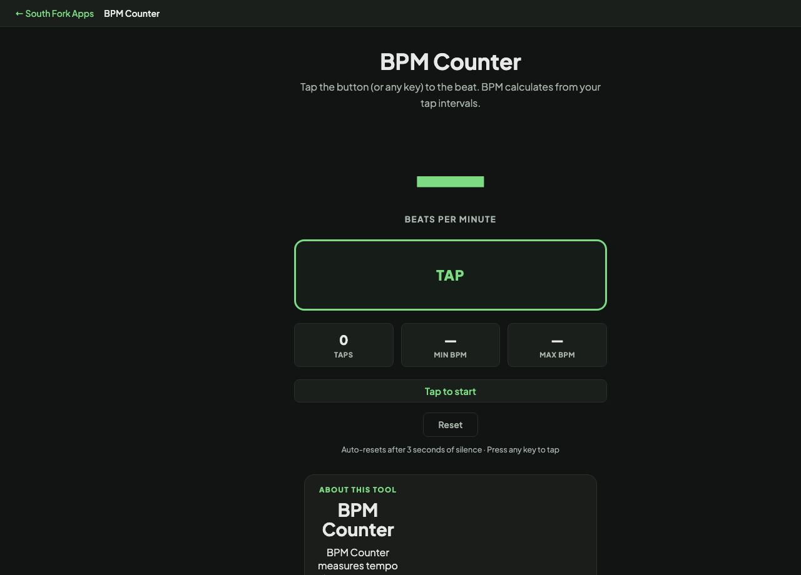

BPM Counter
Tap the button (or any key) to the beat. BPM calculates from your tap intervals.
Auto-resets after 3 seconds of silence · Press any key to tap
BPM Counter
Tap tempo BPM counter. Tap any key or the button to calculate your beats per minute in real time. Resets automatically after 3 seconds of silence.
BPM Counter is a free browser-based tool from South Fork Apps. There's nothing to install, no account to create, and no usage limit. Open the page, do the work, and move on.
How it works
- Open BPM Counter in any modern browser on desktop or mobile.
- Enter or paste your input into the tool's main field.
- Adjust any options shown on the page to match what you need.
- Copy or download the result and continue with your work.
Why use a browser tool
Browser tools beat installable apps when the job is small. You don't have to manage updates, sign in, or wait for a heavy program to load. BPM Counter runs entirely in your browser. Your input never leaves your device, no analytics watch what you type, and the page stops working the moment you close the tab.
Privacy and data
South Fork Apps tools process everything client-side in JavaScript. No server sees your data. Nothing is stored, logged, or sent anywhere. If you're working with sensitive content, you can verify by opening the page once, disconnecting from the internet, and watching BPM Counter keep working.
